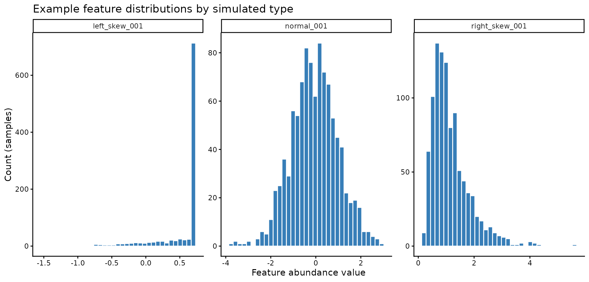
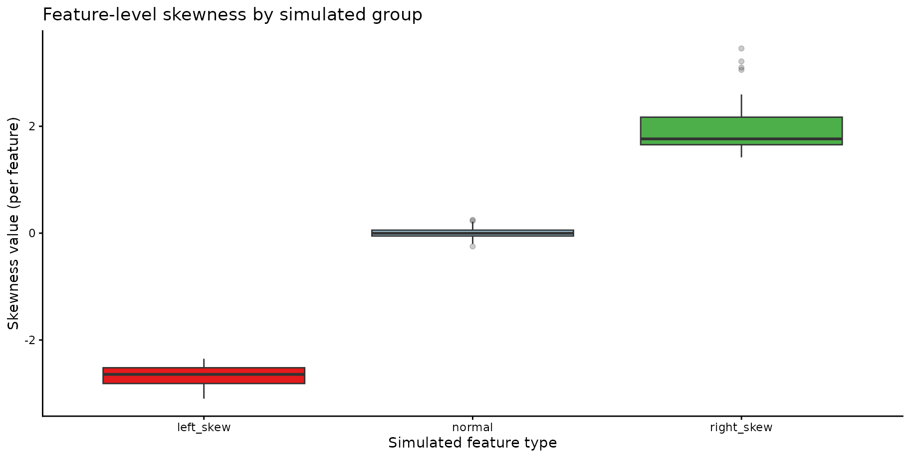
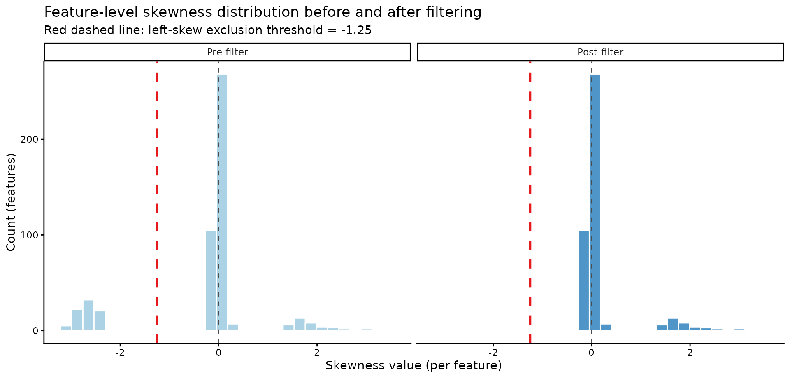
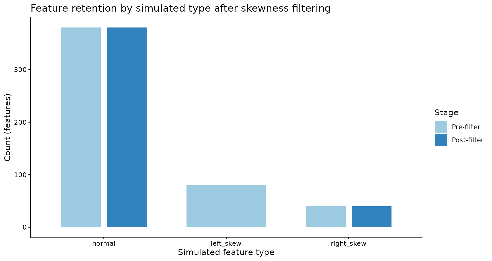
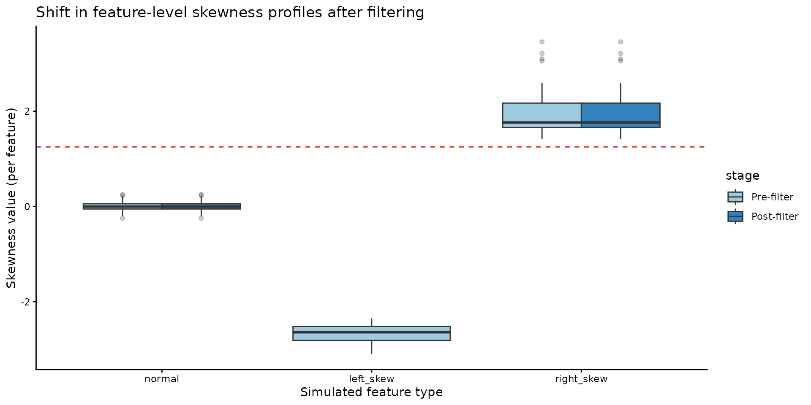

Skewness-Based Feature QC
skewness_qc.RmdUpper limit of quantification (skewness)
Some measurement platforms have upper limits of quantification which can result in skewed data with ceiling effects. In this vignette we:
- simulate a dataset (
1000samples x500features), - show 3 feature types (normal, left-skew, right-skew),
- explain what skewness means,
- run skewness filtering in
quality_control(), - and visualize pre/post filtering impact.
1) Simulate Data (1000 Samples x 500 Features)
We create 3 feature groups:
-
normal: approximately symmetric distributions, -
left_skew: features with upper-end truncation (mimicking ceiling effects), -
right_skew: positively skewed features.
n_samples <- 1000
n_normal <- 380
n_left_skew <- 80
n_right_skew <- 40
stopifnot(n_normal + n_left_skew + n_right_skew == 500)
# 1) approximately symmetric features
normal_block <- matrix(
rnorm(n_samples * n_normal, mean = 0, sd = 1),
nrow = n_samples,
ncol = n_normal
)
# 2) left-skew features generated via upper-end truncation
left_raw <- matrix(
rnorm(n_samples * n_left_skew, mean = 1.2, sd = 0.9),
nrow = n_samples,
ncol = n_left_skew
)
upper_limit <- 0.7
left_skew_block <- pmin(left_raw, upper_limit)
# 3) right-skew features
right_block <- matrix(
rlnorm(n_samples * n_right_skew, meanlog = 0, sdlog = 0.55),
nrow = n_samples,
ncol = n_right_skew
)
data <- cbind(normal_block, left_skew_block, right_block)
colnames(data) <- c(
paste0("normal_", sprintf("%03d", seq_len(n_normal))),
paste0("left_skew_", sprintf("%03d", seq_len(n_left_skew))),
paste0("right_skew_", sprintf("%03d", seq_len(n_right_skew)))
)
rownames(data) <- paste0("sample_", seq_len(n_samples))
samples <- data.frame(sample_id = rownames(data))
features <- data.frame(
feature_id = colnames(data),
simulated_group = c(
rep("normal", n_normal),
rep("left_skew", n_left_skew),
rep("right_skew", n_right_skew)
)
)Representative distributions for one feature from each group:
inspect_features <- c("normal_001", "left_skew_001", "right_skew_001")
plot_df <- data.frame(
feature = rep(inspect_features, each = n_samples),
value = as.vector(data[, inspect_features, drop = FALSE])
)
ggplot(plot_df, aes(x = value)) +
geom_histogram(bins = 35, fill = "#377EB8", color = "white") +
facet_wrap(~feature, scales = "free", nrow = 1) +
theme_classic() +
labs(
x = "Feature abundance value",
y = "Count (samples)",
title = "Example feature distributions by simulated type"
)
This is the key motivation: some individual features
have visibly skewed distributions. In the above we can see how the
distribution of feature 001 changes based on the
simulation; we will focus on the left_skew data.
2) What skewness means (per feature)
omiprep computes skewness for each feature
across samples using psych::describe() and takes
the skew column (default type = 3 in
psych::skew):
where are sample values for one feature, is the feature mean, is the feature SD, and is the number of non-missing sample values.
Plain-language interpretation:
-
skew < 0(left_skew): most values are concentrated on the right side, with a tail extending to the left. -
skew > 0(right_skew): most values are concentrated on the left side, with a tail extending to the right. - larger
abs(skew)means stronger asymmetry.
What the threshold means
The threshold is a cutoff on skewness magnitude, not a p-value.
- With
direction = "left", a feature is excluded ifskew <= -threshold. - With
direction = "right", a feature is excluded ifskew >= threshold. - With
direction = "both", a feature is excluded ifabs(skew) >= threshold.
So for threshold = 1.25 and
direction = "left", features with skewness
<= -1.25 are flagged/excluded.
The helper feature_skewness() returns one row per
feature:
skew_df <- feature_skewness(
data = data,
threshold = 1.25,
direction = "left"
)
skew_df$simulated_group <- features$simulated_group[match(skew_df$feature_id, features$feature_id)]
head(skew_df[order(skew_df$skew), ], 10)
#> feature_id skew exclude_by_skewness simulated_group
#> 384 left_skew_004 -3.097501 TRUE left_skew
#> 390 left_skew_010 -3.085930 TRUE left_skew
#> 392 left_skew_012 -3.056769 TRUE left_skew
#> 382 left_skew_002 -3.020733 TRUE left_skew
#> 388 left_skew_008 -3.009804 TRUE left_skew
#> 383 left_skew_003 -2.941145 TRUE left_skew
#> 439 left_skew_059 -2.936271 TRUE left_skew
#> 389 left_skew_009 -2.934770 TRUE left_skew
#> 429 left_skew_049 -2.929402 TRUE left_skew
#> 447 left_skew_067 -2.927903 TRUE left_skewSkewness distributions by simulated group; we can see that the
normally distributed features are mostly around skew = 0,
the left-skewed features have negative skewness values (many below
-1.25), and the right-skewed features have positive
skewness values.
ggplot(skew_df, aes(x = simulated_group, y = skew, fill = simulated_group)) +
geom_boxplot(outlier.alpha = 0.25) +
theme_classic() +
scale_fill_manual(values = c(
normal = "#9ECAE1",
left_skew = "#E41A1C",
right_skew = "#4DAF4A"
)) +
guides(fill = "none") +
labs(
x = "Simulated feature type",
y = "Skewness value (per feature)",
title = "Feature-level skewness by simulated group"
)
3) Apply a skewness filtering rule
To keep this vignette fast while using 1000 x 500 data,
we apply the same feature-level rule directly:
skew_rule <- feature_skewness(
data = data,
threshold = 1.25,
direction = "left"
)
excluded_skew <- skew_rule$feature_id[skew_rule$exclude_by_skewness %in% TRUE]How many features are excluded by skewness?
length(excluded_skew)
#> [1] 80
head(excluded_skew, 20)
#> [1] "left_skew_001" "left_skew_002" "left_skew_003" "left_skew_004"
#> [5] "left_skew_005" "left_skew_006" "left_skew_007" "left_skew_008"
#> [9] "left_skew_009" "left_skew_010" "left_skew_011" "left_skew_012"
#> [13] "left_skew_013" "left_skew_014" "left_skew_015" "left_skew_016"
#> [17] "left_skew_017" "left_skew_018" "left_skew_019" "left_skew_020"Exclusions by simulated feature type:
excluded_tbl <- data.frame(feature_id = excluded_skew)
excluded_tbl$simulated_group <- features$simulated_group[match(excluded_tbl$feature_id, features$feature_id)]
table(excluded_tbl$simulated_group, useNA = "ifany")
#>
#> left_skew
#> 80
m <- Omiprep(data = data, samples = samples, features = features)
m_qc <- quality_control(
omiprep = m,
source_layer = "input",
sample_missingness = 0.2,
feature_missingness = 0.2,
feature_skewness_threshold = 1.25,
feature_skewness_direction = "left",
total_peak_area_sd = NA,
outlier_udist = 5,
pc_outlier_sd = NA,
cores = 2,
fast = FALSE
)
#>
#> ── Starting Omics QC Process ───────────────────────────────────────────────────
#> ℹ Validating input parameters
#>
#> ℹ Validating input parameters── Starting 'Omics QC Process ──────────────────────────────────────────────────
#> ℹ Validating input parameters✔ Validating input parameters [24ms]
#>
#> ℹ Validating input parameters
#> ✔ Validating input parameters [17ms]
#>
#> ℹ Sample & Feature Summary Statistics for raw data
#> AF = 3
#> ✔ Sample & Feature Summary Statistics for raw data [37.4s]
#>
#> ℹ Copying input data to new 'qc' data layer
#> ✔ Copying input data to new 'qc' data layer [38ms]
#>
#> ℹ Assessing for extreme sample missingness >=80% - excluding 0 sample(s)
#> ✔ Assessing for extreme sample missingness >=80% - excluding 0 sample(s) [34ms]
#>
#> ℹ Assessing for extreme feature missingness >=80% - excluding 0 feature(s)
#> ✔ Assessing for extreme feature missingness >=80% - excluding 0 feature(s) [32m…
#>
#> ℹ Assessing for sample missingness at specified level of >=20% - excluding 0 sa…
#> ✔ Assessing for sample missingness at specified level of >=20% - excluding 0 sa…
#>
#> ℹ Assessing for feature missingness at specified level of >=20% - excluding 0 f…
#> ✔ Assessing for feature missingness at specified level of >=20% - excluding 0 f…
#>
#> ℹ Assessing for feature skewness at threshold <= -1.25 - excluding 0 feature(s)
#> ✔ Assessing for feature skewness at threshold <= -1.25 - excluding 80 feature(s…
#>
#> ℹ Running sample data PCA outlier analysis at +/- 5 Sdev
#> ✔ Running sample data PCA outlier analysis at +/- 5 Sdev [27ms]
#>
#> ℹ Creating final QC dataset...
#> AF = 6
#>
#> ℹ Creating final QC dataset...── Step timings ──
#> ℹ Creating final QC dataset...
#> ℹ Creating final QC dataset...
#> step seconds pct
#> validation 0.03 0.0
#> summarise_raw 37.41 57.6
#> copy_layer 0.02 0.0
#> extreme_sample_missingness 0.01 0.0
#> extreme_feature_missingness 0.02 0.0
#> sample_missingness 0.01 0.0
#> feature_missingness 0.29 0.4
#> summarise_final 26.98 41.5
#> total 64.97 100.0
#> ✔ Creating final QC dataset... [27s]
#>
#> ℹ 'Omics QC Process Completed
#> ✔ 'Omics QC Process Completed [13ms]4) Post-filtering impact on distributions
All plots below are feature-level summaries (counting features), except where explicitly stated.
included_features <- setdiff(colnames(data), excluded_skew)
pre_skew <- feature_skewness(data, threshold = NULL)
post_matrix <- data[, included_features, drop = FALSE]
post_skew <- feature_skewness(post_matrix, threshold = NULL)
pre_skew$stage <- factor("Pre-filter", levels = c("Pre-filter", "Post-filter"))
post_skew$stage <- factor("Post-filter", levels = c("Pre-filter", "Post-filter"))
skew_compare <- rbind(
pre_skew[, c("feature_id", "skew", "stage")],
post_skew[, c("feature_id", "skew", "stage")]
)4a) Feature-skewness distribution before vs after filtering
params_used <- attributes(m_qc@data)
skewness_threshold <- ifelse(params_used$qc_feature_skewness_direction=="left",
-1 * params_used$qc_feature_skewness_threshold,
1 * params_used$qc_feature_skewness_threshold)
ggplot(skew_compare, aes(x = skew, fill = stage)) +
geom_histogram(bins = 30, color = "white", alpha = 0.85) +
facet_wrap(~stage, nrow = 1) +
geom_vline(xintercept = 0, color = "#4D4D4D", linetype = "dashed") +
geom_vline(xintercept = skewness_threshold, color = "#E41A1C", linetype = "dashed", linewidth = 1) +
theme_classic() +
scale_fill_manual(values = c("Pre-filter" = "#9ECAE1", "Post-filter" = "#3182BD")) +
guides(fill = "none") +
labs(
x = "Skewness value (per feature)",
y = "Count (features)",
title = "Feature-level skewness distribution before and after filtering",
subtitle = paste0("Red dashed line: left-skew exclusion threshold = ", skewness_threshold)
)
4b) Feature retention by simulated type
pre_counts <- as.data.frame(table(features$simulated_group), stringsAsFactors = FALSE)
names(pre_counts) <- c("simulated_group", "n")
pre_counts$stage <- factor("Pre-filter", levels = c("Pre-filter", "Post-filter"))
post_counts <- as.data.frame(table(features$simulated_group[features$feature_id %in% included_features]), stringsAsFactors = FALSE)
names(post_counts) <- c("simulated_group", "n")
post_counts$stage <- factor("Post-filter", levels = c("Pre-filter", "Post-filter"))
counts_df <- rbind(pre_counts, post_counts)
counts_df$simulated_group <- factor(counts_df$simulated_group, levels = c("normal", "left_skew", "right_skew"))
ggplot(counts_df, aes(x = simulated_group, y = n, fill = stage)) +
geom_col(position = position_dodge(width = 0.75), width = 0.65) +
theme_classic() +
scale_fill_manual(values = c("Pre-filter" = "#9ECAE1", "Post-filter" = "#3182BD"), drop = FALSE) +
labs(
x = "Simulated feature type",
y = "Count (features)",
fill = "Stage",
title = "Feature retention by simulated type after skewness filtering"
)
4c) Skewness profiles by feature type (pre vs post)
pre_plot <- merge(pre_skew, features, by = "feature_id", all.x = TRUE)
post_plot <- merge(post_skew, features, by = "feature_id", all.x = TRUE)
box_df <- rbind(
data.frame(stage = "Pre-filter", simulated_group = pre_plot$simulated_group, skew = pre_plot$skew),
data.frame(stage = "Post-filter", simulated_group = post_plot$simulated_group, skew = post_plot$skew)
)
box_df$stage <- factor(box_df$stage, levels = c("Pre-filter", "Post-filter"))
box_df$simulated_group <- factor(box_df$simulated_group, levels = c("normal", "left_skew", "right_skew"))
ggplot(box_df, aes(x = simulated_group, y = skew, fill = stage)) +
geom_boxplot(outlier.alpha = 0.25, position = position_dodge(width = 0.75)) +
geom_hline(yintercept = -skewness_threshold, color = "#E41A1C", linetype = "dashed") +
theme_classic() +
scale_fill_manual(values = c("Pre-filter" = "#9ECAE1", "Post-filter" = "#3182BD")) +
labs(
x = "Simulated feature type",
y = "Skewness value (per feature)",
title = "Shift in feature-level skewness profiles after filtering"
)